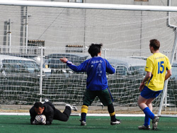
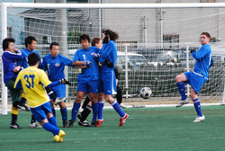
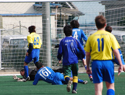

|
Hachioji Park, Saturday 6th February.
The Geckoes had a good team out versus the Jets on a chilly Saturday at Hachioji Park. One of the rare Saturday and afternoon games we've had this year. Was a bit nervy as the ref was not there and we'd be warned by the league to make sure to start the games right on time, nearly had to pick a player from one of the teams do the honors, but Orlando turned up and were kicking off soon after that.
Off to a great start with Brommie and Andy linking up very well straight from the kick off, Brommie played a good ball to Andy out on the left and when the ball came back in he had made his way into the box and fired over, but a very encouraging start. We kept the pressure on and it told from a well taken corner about 10min in to the match. Brommie's delivery was excellent and Rob Snaith's glancing header beat the keeper and went in off the left upright. 1-0 to the Gecks. We were able to create some more good chances often coming through Kai getting the ball in space on the right and playing some excellent passes forward to Andy and Jonas.
He put Jonas through towards the end of the half and the star striker really should have scored after rounding the keeper, but taking one touch too many allowed the defender to bundle the ball clear and the half ended shortly after with the Geckoes goal largely untroubled.
The Jets must have had a halftime talking to from their manager as they came out much more lively to start the second half and were level shortly thereafter. The Geckoes defense failed to get a ball clear not for the first time and this time were punished when the ball was put back in the box the Jets striker got hold of it and shot well past Goro. The Jets had the pressure on after that and may have been the team to go ahead, but the Geckoes turned the tide and Andy Gill got the ball in after a few attempts by other players in a goalmouth scramble. Andy then showed why we was an easy choice this time as Man of Match and towards the end of the game assisting with the second goal producing an outstanding cross to Jonas who in turn took the ball down very well with his chest and finished with ease past the Jets keeper.
We thought the game was finished but the Jets refused to give up and almost straight from kickoff ran into the box and the same striker who notched the first goal got his second with a well taken low shot to the keepers right. The Jets comeback was finally put out when Andy got on to a ball forward got passed the defender was fouled and got the penalty. He stepped up to take it and made no mistake.
Have to hand it to the Jets to a well fought game and they may have thought they deserved more. However, the Geckoes generally defended well all day and had some excellent passing moves to justify the three points. Notable performances by Brommie initially saying he'd need a break since he was out drinking up a storm the night before but did very well and played the whole game. Also, Rob Snaith seems to put himself about and be in the right place at the right time more often than not.
Report by Peter Zollar
|